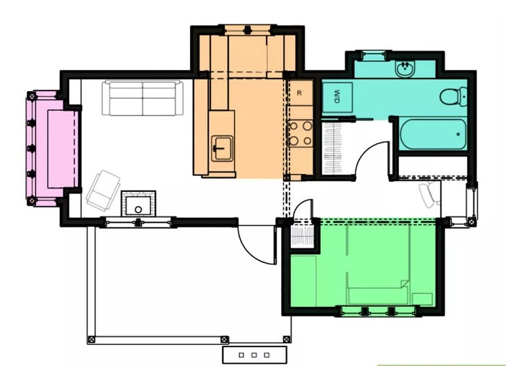

Design your own home, or consult an architect. Architects and engineers have special training and years of experience in designing houses, and are necessary for most building and zoning jurisdiction code requirements. Regardless of whether you contract their services or elect to design your own, the house you build will be built for you, so you should be involved closely in the design process.
Before you hire or consult an architect, find out what management services the firm may or may not provide. Some architecture firms will help hire contractors they know and trust, as well as consult and inspect the contractor's work as it progresses, making necessary revisions and additions as the work progresses. This can be a significant headache relief in the process.[2] Before building, you'll need to submit plans to the city or county building commission for approval. Unless you're an experienced architect, it'll be very difficult to produce the necessary to-scale production drawings and engineering specs necessary for approval. To save time, energy, and money, it's recommended that you consult a professional and work alongside them to design the home you want.
Design the living spaces. The fun part of designing a home is imagining your new life in your new space. Spend some time researching pre-drawn floor plans for inspiration and consider using them as a guide for your own space. Home building guides are commonly available for free online.[3] Give lots of thought to what kind of rooms you want, the number of bedrooms that will be necessary for your family, and what sort of a style you want in the rooms you'll be spending the most time in. Bedrooms: For a family house where the possibility of additions exists, remember it is simpler to add a room during initial construction than to remodel or build an addition later. If you only need 2 bedrooms at present, an extra room might be used for an office, storage, or even left unfinished and unfurnished until such time as it is needed. Bathrooms: In practical terms, one bathroom can suffice in almost any circumstances, but if the house is for multiple people, two makes life much easier. Having two or more bathrooms will also increase the resale value in the convenience minded home buyer's mind.
Special function rooms: Consider if your lifestyle requires rooms suitable for special functions, such as formal dining, office space, a den, or a play room.
Design the utility areas with an eye toward function. For family life, having a laundry room, and possibly even a garage can be a real help in managing day to day chores. Planning out the necessary house-running spaces is a critical part of the design process. It's also important to design them to be as easy-to-wire and outfit with plumbing as possible, making it important to consult an architectural engineer when designing the home. Carefully design your:
Place windows with the maximum energy efficiency in mind. Part aesthetics and part energy-efficiency, designing your home with an eye toward sunlight will ensure that your home stays full of warm radiant light when it needs it the most. If you are building a home with large windows in a living room, consider facing these toward the most appealing view and at an angle that maximizes the natural lighting when you'll want it most.[4] Kitchens may benefit the most from exterior light, so think about what time a ray of sunshine in the kitchen will offer the best results. Late afternoon may be cooking and dish washing time, so it may be best to orient the kitchen towards the west to take advantage. Larger windows on the south face of your house will also help heat the house through solar gain in colder climates.
Prepare to tackle water drainage issues with the proper design. Be aware of how surface water (rain, snow melt, drainage from seasonal springs) moves across the building site. It is critical to keep water away from your home, especially in colder climates. Freezing pipes and foundation damage can result from a failure to plan at this stage. You want to keep your basement dry and lessen the chance that you will have damp wood, which invites termites in any climate. Simple swales or grassy ditches will go a long way in controlling surface water drainage.
